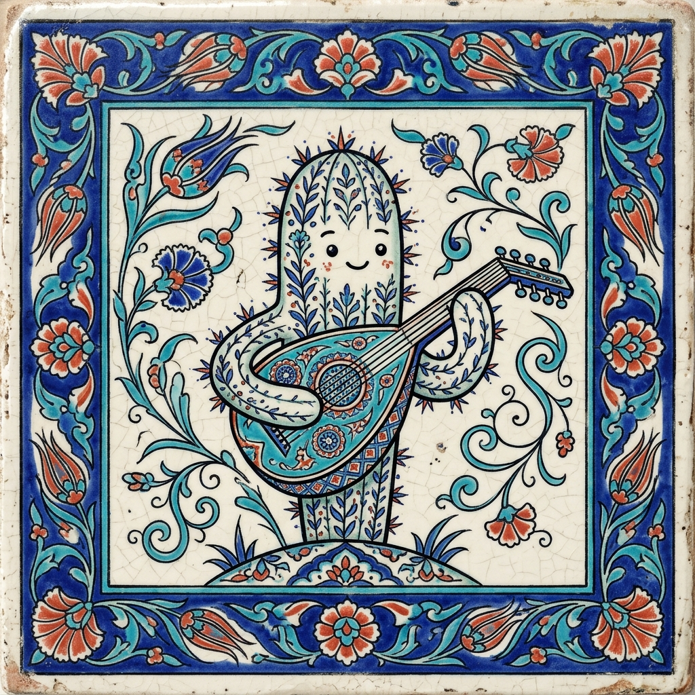
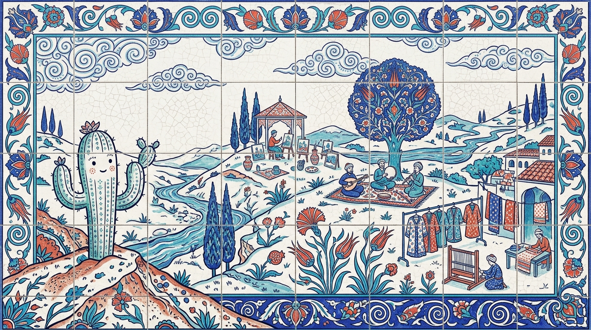
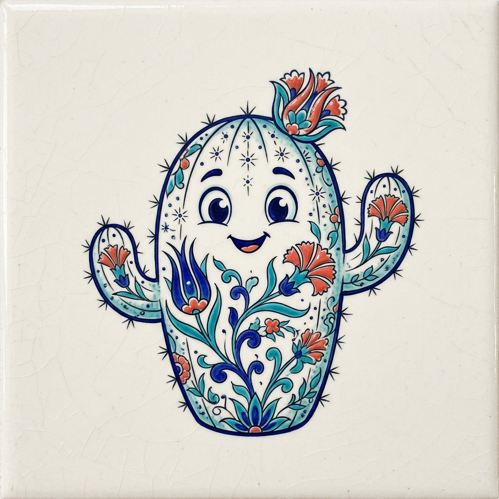
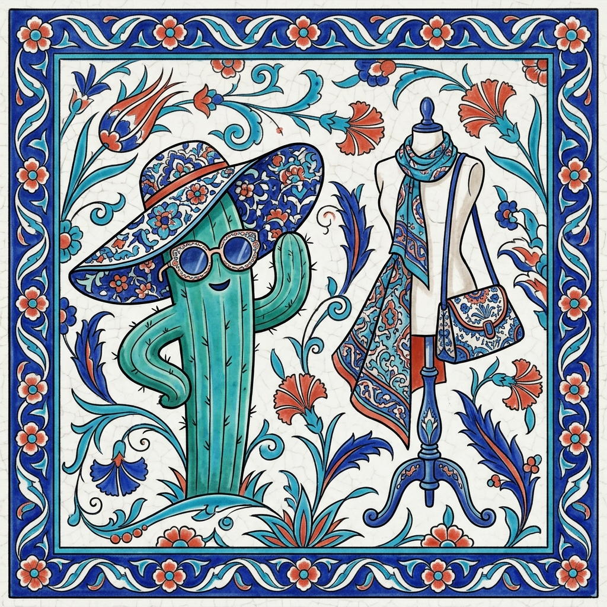
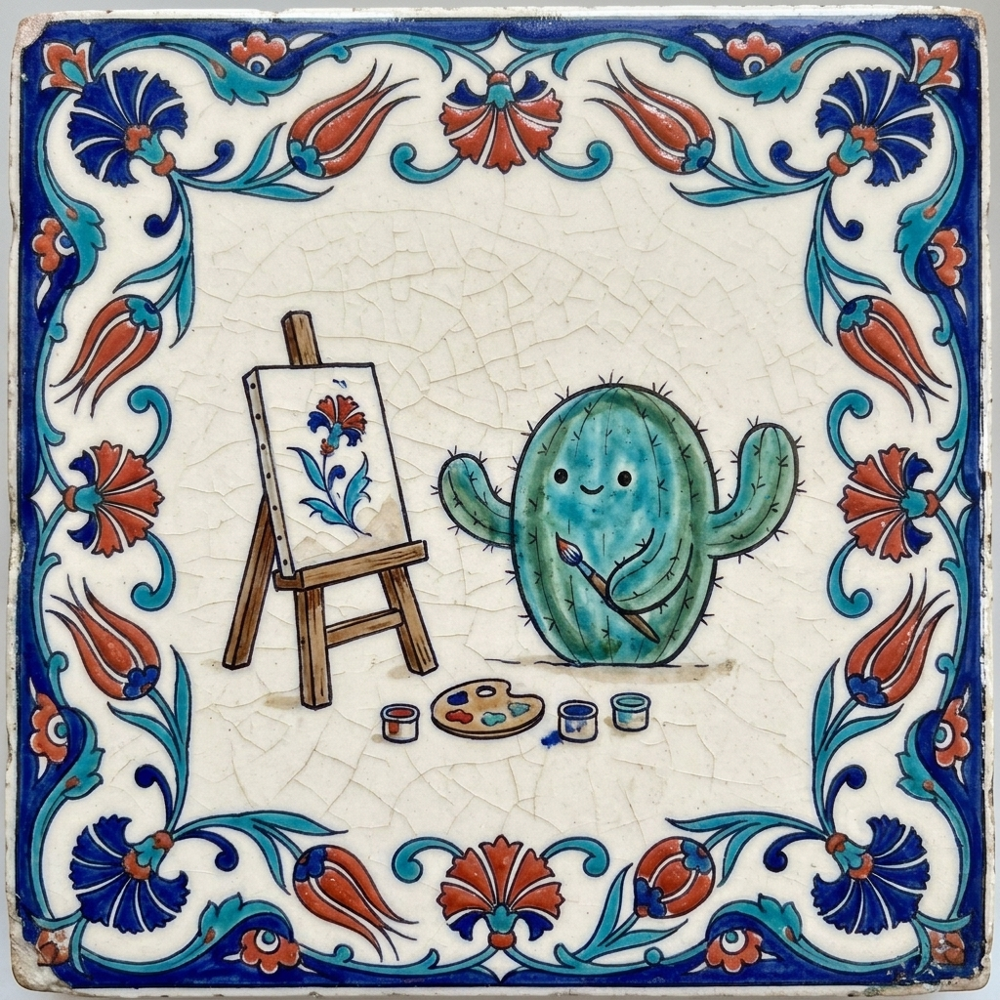

Music
Exploring melodic rhythms and traditional stringed instruments that inspire creative flow.

Welcome to my creative space blending art, design, and code into cinematic digital experiences.

I am a digital creator who loves turning Turkish tile art traditions into lively, interactive web experiences while sipping copious amounts of Turkish coffee. My guiding philosophy is that code should feel just as handcrafted, vibrant, and fun as an intricate ceramic mural. When I am not designing pixels or writing clean algorithms, you can find me exploring quirky art projects alongside my cheerful cactus mascot.

Exploring melodic rhythms and traditional stringed instruments that inspire creative flow.

Appreciating contemporary style interwoven with timeless handcrafted textile motifs.

Painting intricate ceramic patterns and experimenting with visual aesthetics and color palettes.
Feel free to reach out for collaborations, creative projects, or just to say hello.